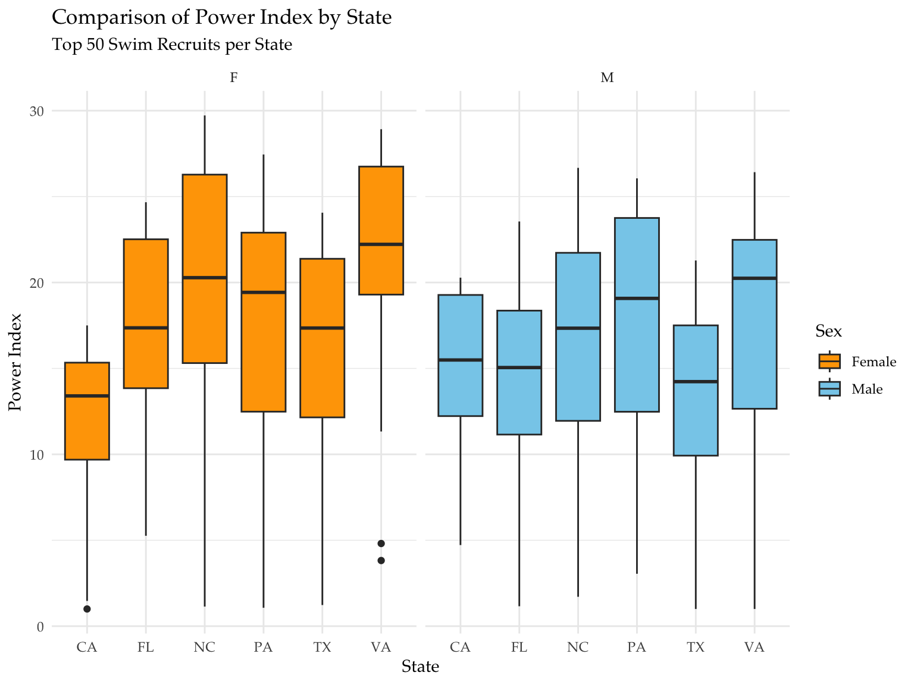

In the world of Junior Age Group Swimming, very few states have had as significant of an impact as California. Having been historically viewed as a talent powerhouse, California has consistently produced Olympians, national record holders, and some of the top college recruits every year. Despite the state’s long track record as an elite swimming superpower for those under the age of 18, the swimming world continues to evolve, with states such as Texas, Florida, and Virginia emerging as potential contenders for the “best” swimming state. Many people in the swimming world have begun to wonder if California is maintaining its dominance, or if other states have begun to catch up or even surpass it. The 2022 SwimSwam article, “Has American Age Group Swimming Power Shifted East?” highlights the recent debate that has emerged surrounding the Age Group Swimming scene in the United States. The author, long time swimmer and coach Michael Hamann, brings up the argument that while the sheer population of California results in the state having a higher quantity of top swimmers, if trends continue than East-coast states such as Virginia and North Carolina have a high chance of becoming the new hub of elite junior swimming. Hamann continues to state that according to USA Swimming’s own club rankings, “the top 5 teams from the 2021-22 short course season all hail from North Carolina, Virginia or the D.C. metro area,” reinforcing the idea that California may be losing its grip as a powerhouse.
On the other hand, one could also make the point that due to California’s size, their talent may be more spread out among different club teams, while top swimmers in smaller states may be more concentrated in fewer club teams. In another article, “Which State Had the Best High School Swimming During the 2022-2023 Season?” published by Swimming World Magazine, Bucknell University swimmer Avery Kuhn mentions that for the 2021-2022 high school season, “California had the largest total number of All-Americans, with Texas close behind,” even going further to reference the fact that for the following season, 2022-2023, California girls made up 25% of the top 20 200 medley relay times. So, despite the argument that swimming dominance may be heading towards the East coast, recent high school swimming results seem to keep California as the clear outlier, especially for women’s swimming.
Returning to the question of whether or not California is still an age group swimming powerhouse, in this case, “powerhouse” being defined as a state which consistently produces a high volume of elite swimmers, this project will be investigating this year’s class of high school senior swimmers to determine how California relates to other states. Comparing California’s current top swimmers to those of other standout states will allow us to make a decision on whether or not California remains dominant, for both men and women’s swimming respectively. Section 2 of this project will detail the methods and reasoning behind the selection of the data, including surface-level visual summaries of the data. Section 3 will go through the statistical analysis utilized to obtain results, applying statistical inference to come to the relevant conclusions. Section 4 will present this conclusion, summarizing the results of the overall project and provide an insight of what future work on this topic may look like.
Methods
In order to adequately explore our hypothesis regarding California’s dominance in age group swimming, we must gather and examine data, obtaining a sample that represents the greater population. In this case, we will be looking at high school swimmers that will be graduating in the Spring of 2025. The full data set included all men and women in this category, scraped from a public swimming database, swimcloud.com, amounting to over 50,000 swimmers. Both the male and female data sets included the ranking, state, and power index for each swimmer. To limit our data to a more manageable size, we first limited our data to the top 1,000 swimmers nationally for both men and women, focusing on those of elite performance only. These swimmers represent the top talent in the country and will likely be recruited to swim at the NCAA level. From there, to narrow down potential powerhouse states, we identified all of the states that had at least 50 men and 50 women in the top 1,000, and only looked at those top 50 athletes. This also ensured that the states included in the analysis had an equal and large enough sample. The end result consisted of six states: California, Texas, Florida, North Carolina, Pennsylvania, and Virginia.
Every swimmer in this data set is ranked by their aforementioned power index, a standard performance metric used in swim recruiting to represent the overall skill of the athlete. This number is calculated by comparing each swimmer’s five fastest events to the times of other high school swimmers of the same class. The power index ranges from 1.00 to 100.00, with 1.00 being the fastest (top swimmer or swimmers of the class) and 100.00 being the slowest. Having a standardized number to rank recruits allows college coaches to make quick comparisons when recruiting. The visual below displays the distribution of power index for each state included in this project, for both men and women:
Show the code
top_100_MF <-bind_rows(top_100_M, top_100_F)ggplot(top_100_MF, aes(x=state, y=power_index, fill=sex)) +geom_boxplot() +labs(x ="State",y ="Power Index",title ="Comparison of Power Index by State",subtitle ="Top 50 Swim Recruits per State",fill ="Sex" ) +scale_fill_manual(values=c("orange","skyblue"),labels=c("Female","Male")) +facet_wrap(~ sex) +theme_minimal(base_family ="Palatino")

There are some important visual observations to be made here. For example, on the women’s side, while every state except Florida appears to have some fast swimmers with a power index below 5, California’s highest power index appears to be at or lower than the medians of the other states. On the other hand, states appear to be much more even on the men’s side, though Texas appears to have a lower median power index than the other five states. Additionally, California once again tends to have the lowest maximum power index. However, it is unclear if these visual discrepancies are due to state-wide dominance or simply the variability of skill.
In order to investigate if California can still be considered an age group swimming powerhouse, which relies on if their swimmers are truly faster on average, we will perform two separate analysis of variance (ANOVA) tests, on the male sample and women sample respectively. Conducting an ANOVA test will help us conclude whether there are any statistically significant differences in the mean power indexes across all six states in the samples. This method is appropriate for this project because it compares the means of a numeric variable (the power index) across various categorical groups (the states). If a statistically significant difference is found, we will then conduct a Tukey Honest Significant Difference (HSD) test to determine the specific states that differed from California by observing the pairwise comparisons.
It is important to note that these are not a random samples of age group swimmers, but instead, as stated above, a carefully selected group of some of the top 2025 graduating seniors in the country. We completely disregarded swimmers from 44 states, along with the hundreds of thousands of swimmers in other grades. Despite these clear limitations, the samples represent the recruiting pool that hundreds of college coaches look at every year, along with the rest of the nation’s elite swim recruits. This project is not an attempt to generalize all swimmers in the country, but instead to identify the trends in top swimming performance among a few standout states. In that case, these two samples of male and female recruits contain enough data for us to draw relevant conclusions regarding the six selected states and how California compares to the other five.
Data Analysis
Before comparing power indexes between states, we first examined the overall distribution of the power index for both men and women. Looking at the chart below, it can be seen that the distributions for both sexes are left skewed, with peaks around 15-20. These trends are to be expected and can be explained by the fact that we have selected only the top elite swimmers and excluded slower swimmers. There are less swimmers with a sub-10 power index, leading to a concentration in power indexes between 10 and 30. This distribution also helps explain some of the trends seen in the residual plots later in the ANOVA testing.
Show the code
ggplot(top_100_MF, aes(x = power_index, fill = sex)) +geom_histogram(color ="black", bins =13) +facet_wrap(~ sex) +labs(x ="Power Index",y ="Density",title ="Power Index Distribution Among Top States",subtitle ="n = 50 swimmers per state" ) +scale_fill_manual(values=c("orange","skyblue"),labels=c("Female","Male")) +theme_minimal(base_family ="Palatino")
Our goal in this project is to determine if California is significantly faster than the other top age group swimming states in the country, which can be measured by examining average power indexes amongst the top swimmers in each state. Once again, a lower average power index indicates faster swimmers, while a higher power index indicates slower swimmers. In order to test whether swimmer performance differs by state, we conducted an Analysis of Variance test separately for both men and women. Our null hypothesis and alternate hypothesis can be written as follows:
\[H_A: \text{not } H_0\] While ANOVA tells us if any significant differences exist by giving us an F-statistic, where a value significantly greater than 1 tells us that at least one group mean differs from the rest, what we are really looking for is whether or not California’s swimmers are faster or slower than those of other states. To do this, we followed each ANOVA test with a Tukey Honest Significant Differences test to make pairwise comparisons between California.
After conducting the two separate ANOVA tests for male and female age group swimmers, the resulting F-statistics were:
Because we know that \(F \approx 1\) if the null is true and \(F > 1\) for both men and women (much greater than 1 in the case of women), it indicates that a statistically significant difference does exist between states. Additionally, the corresponding p-values of the F-statistics were \(p_M \approx 0.002\) and \(p_F \approx 0\), indicating that we should reject our overall null hypothesis that all states have about an equal average power index. However, the next question we want to know is whether or not it is California that differs significantly. To figure this out, we then conducted the Tukey HSD tests on the two groups, only looking at comparisons involving California. The plot below displays the results for both men and women, and each horizontal line represents a 95% confidence interval for the mean difference between California and another state.
Show the code
aov_men <-aov(power_index ~ state, data = top_100_M)tukey_emm_m <-emmeans(aov_men, pairwise ~ state, adjust ="tukey", infer =c(TRUE, TRUE))tukey_df_m <-as.data.frame(tukey_emm_m$contrasts) |>filter(grepl("^CA", contrast))tukey_men <-ggplot(tukey_df_m, aes(x = contrast, y = estimate)) +geom_point() +geom_errorbar(aes(ymin = lower.CL, ymax = upper.CL), width =0.2) +geom_hline(yintercept =0, linetype ="dashed", color ="red") +coord_flip() +labs(title ="Tukey HSD Comparisons of Power Index by State",subtitle ="Top 50 Male Swim Recruits per State",x ="State Comparison",y ="Estimated Mean Difference") +theme_minimal(base_family ="Palatino")aov_women <-aov(power_index ~ state, data = top_100_F)tukey_emm_f <-emmeans(aov_women, pairwise ~ state, adjust ="tukey", infer =c(TRUE, TRUE))tukey_df_f <-as.data.frame(tukey_emm_f$contrasts) |>filter(grepl("^CA", contrast))tukey_women <-ggplot(tukey_df_f, aes(x = contrast, y = estimate)) +geom_point() +geom_errorbar(aes(ymin = lower.CL, ymax = upper.CL), width =0.2) +geom_hline(yintercept =0, linetype ="dashed", color ="red") +coord_flip() +labs(title ="Tukey HSD Comparisons of Power Index by State",x ="State Comparison",subtitle ="Top 50 Female Swim Recruits per State",y ="Estimated Mean Difference") +theme_minimal(base_family ="Palatino")
For men, the results were fairly mixed. California had a lower (faster) mean power index than Virginia, Pennsylvania, and North Carolina, and a higher (slower) mean than Texas and Florida. However, the confidence intervals for all five comparisons all crossed 0, meaning that none of the differences found between California were significantly different and could have just occurred through chance. This means that the high F-statistic and resulting low p-value for men came from significant differences between other states, not involving California.
On the women’s side of things, the results were much more conclusive. California had a lower mean power index than all five other states, and the 95% confidence interval did not cross zero for any of the states. This indicates that the differences between California and the other states were significantly different, meaning that California’s top female swimmers are significantly faster than the top female swimmers from the other top states.
Additionally, we can look at the residual plots for both men and women to confirm the validity of the ANOVA tests. The 2x2 chart below displays some useful residual visualizations, with men on the top row and women on the bottom row:
For both groups, the residuals vs fitted plots do not reveal any significant deviations and show fairly balanced distributions. The Q-Q residual plots show that the majority of the points lie fairly close to the theoretical line, though the ends do slightly flatten out. However, this is to be expected since our data only included top swimmers, limiting the number of values that could be considered extreme. Overall, the residuals do not indicate any problems with the data and therefore the ANOVA assumptions remain valid for both the men and women models.
Overall, while the p-values were less than 0.05 for both men and women, the resulting Tukey HSD charts revealed that it was only California’s women age group swimmers that were significantly faster than those of the other top swimming states. On the men’s side though California still remains competitive among other states, the performance of its male swimmers are statistically indistinguishable from those in the other top states. This supports our claim that California is still a “powerhouse” state for age group swimming, especially for women’s swimming, though it is not uniquely dominant for men and women both.
Summary
The goal for this project was to determine if California is still an age group swimming powerhouse, or in other words, if California continues to produce the fastest age group swimmers in country. We measured this by comparing the average power index of the top 50 male and female swimmers within the six states with at least 50 athletes in the top 100 ranked swimmers. These states included California, Texas, Florida, Virginia, North Carolina, and Pennsylvania, all of which have been in the conversation of best age group swimming state at some point in recent years. We then conducted two separate ANOVA tests for men and women, which produced low p-values of approximately 0.002 and 0 respectively, following them with separate Tukey HSD tests to discover if California was significantly faster than any of the other states.
After analyzing the two separate Tukey plots, we were able to conclude that while California’s men have no significant difference in power index between those of the other top states, California’s women appear to be statistically faster than every other top state. Not one of the five confidence intervals included a difference of 0 on the women’s side, providing strong evidence that California continues to remain dominant in women’s age group swimming, both in quantity and overall quality. For men, California actually had a lower average power index than Texas and Florida, and though the confidence interval included 0, it shows that California’s male swimming scene may no longer have the clear edge it once had on other states.
Though our findings appear fairly strong, it is important to take the conclusions with a grain of salt. First, our sample was not random, as it only included the top 50 swimmers from only six states, from just this year’s graduating class. While this was a justifiable and deliberate limitation to focus on the elite talent of top states, it does limit the generalizability to the much larger age group swimming world, especially for smaller states. For example, a really small state like Rhode Island or even Washington D.C., as the formerly referenced SwimSwam article mentioned, could have a very small number of swimmers, yet they could all be ranked in the top 100 in the country. This would definitely place them in a better position than California, which has a large number of athletes in the top 1000 but also a huge number of overall swimmers. Additionally, the usage of the power index may not capture the full talent or performance of an individual swimmer. While the power index ranks swimmers by looking at their top 5 events, it does not capture other important metrics such as development trajectory, stroke specialization, and event depth.
In the future, a major way of expanding on this work would be to investigate the per-capita proportions of top swimmers in each state. This may provide a better picture of whether or not a state could be considered a “powerhouse” in the age group swimming world. One may also consider looking at trends over time, focusing on if California’s elite talent has been declining over the past few years, or if it jumps around on a yearly basis due to variance. All of these future ideas can be taken further by looking beyond just the current class of graduation high school seniors and instead looking at multiple different years. There is much more complex data to be found by analyzing the trends of development for each state, as a huge aspect of swimming revolves around training and growth over long periods of time. In terms of California swimming, continuing to investigate the disparities between men and women’s programs would provide some insight into why women seem to be faster relative to the rest of the country, and if that pattern exists in other classes. Finally, as stated in the last paragraph, coming up with a new, unique way of analyzing swim talent may help with providing a better picture of swimming performance per state without relying solely on an individual’s top 5 times.
Overall, the results of this project support the argument that California continues to be a powerhouse in junior age group swimming, though its dominance in both men and women swimming is not absolute. As other smaller states continue to develop their competitive swimming pipelines and programs, the age group swimming scene in the United States will likely continue to shift and change each year.
Data
Raw CSV files can be found in the website’s public repository on github!
All data is publicly available and collected from swimcloud.com